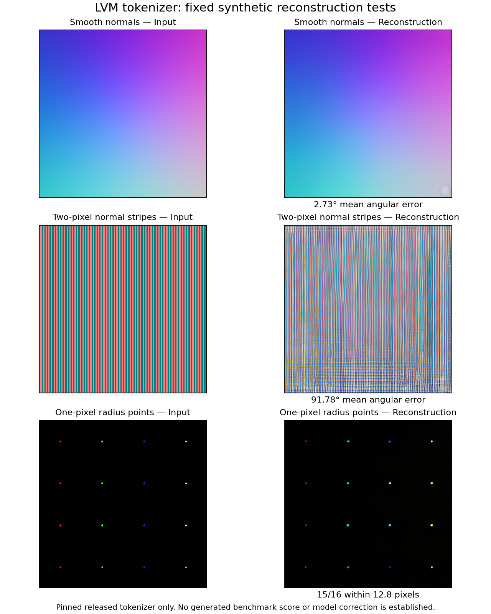

The input-range change has mixed effects across the 13 categories. Both complete conditions are retained.
ONGOING / VALIDATION AUDIT
Corrections and
measured results.
Follow each model from the published scores to the latest verified measurements. Explore every category and query, with each experimental condition kept explicit.
Loading the dated snapshot…
The depth bridge improves all 17 queries. It uses extra demonstration depth metadata and an approximate native representation.
Each model needs a verified fix or an evidence-backed limitation. Required reruns must quantify gains and regressions before a model is marked resolved.
Review the remaining work →ONGOING GOAL
What remains to resolve
Ten comparison models plus VICT. A completed run or a passing local test alone does not close an issue. Each model requires supporting numerical evidence and any necessary complete paired evaluation.
NEW DIAGNOSTICS / OCTOBER 31
What the latest checks establish
Dated snapshot: 2026-10-31T07:08:24.354677+00:00. These measurements are separate from benchmark accuracy; all historical category and query scores are preserved.
LVM: fine-detail loss
The released image codec reconstructs smooth normal fields with 2.73° mean error, but alternating two-pixel normal stripes with 91.78°. All 15 synthetic tests produce finite values.
Of 16 isolated points, 15/16 remain within the 12.8-pixel tolerance at radius one pixel; 16/16 do at radii two, three, five and eight.
Fine-detail loss is measured. These fixtures do not establish why generated benchmark normals or landmarks fail, or justify replacing the authors’ codec.
Native P7: all 221 contexts are prepared, all 221 original P1 episodes replay exactly, and one complete 15-frame context tokenizes correctly. Full 7B inference and scoring remain pending. The legacy P7 row remains diagnostic.
VICT: output conversion repaired locally
The archived restoration path clips before bicubic resizing. Resizing can push values outside the byte range, causing them to wrap during conversion. The prepared correction follows released processing: resize, then clip and convert.
Eight synthetic cases match the released result; 64 other-task checks remain pixel-identical. Synthetic overshoot can change a channel by up to 255 byte levels. In the trained one-update probe, only 10 of 196,608 channel values change, each by one level.
A large benchmark improvement is not established. The original exact comparison stopped after 240 of 360 planned updates. After the first 60-update pair, only 7 of 196,608 output channel values differ, each by one level; the random state matches. Repeating the released code also gives slightly different gradients in all 48 relative-position tables. An isolated check traces this to gradient accumulation and makes all 40 repeats exact with deterministic CPU algorithms. The original exact gate remains failed; these measurements do not establish a large quality defect. With deterministic algorithms, the full-model first update also matches exactly across two released repeats and the port, including all gradients and updated parameters. The full deterministic CPU comparison has now passed all three sequential 60-update cases. Every loss, final model and optimizer state, raw output, pixel image and continuing random state matches exactly across the released and prepared paths. TPU precision and optimizer behavior remain unqualified.
Native-depth checks, appendix settings and complete paired benchmark results remain open.

Completed reference checks
Painter: native semantic adapter
Mean benchmark mIoU rises 0.496 → 0.594 (19.9% relative). Thirteen queries improve and four worsen; the largest regression is −0.102.
This uses extra class metadata from demonstrations and remains a separate condition. Other categories are untouched by this semantic-only test.
InstaManip: full checkpoint CPU tokens pass
Two independent two-shot fixtures produce identical 72-token sequences and text. All 64 image-token hidden states, resampled features and 160 key/value-cache tensors pass the preset absolute and relative tolerances of 10⁻⁴. All checked values are finite.
The five-image CLIP grouping check also passes on both fixtures. The token checks alone do not qualify the padded 80-image TPU batch, TPU precision/sharding or three-shot checkpoint. The completed CPU diffusion check is reported below.
| Fixture | Released | Optimized | Ratio |
|---|---|---|---|
| edge_detection | 244.3s | 65.9s | 3.71× |
| human_pose_2d | 295.2s | 77.3s | 3.82× |
Generation calls fall from 72 to 8 per case. These are two observations, not a throughput benchmark.
The successful qualification took 16.8 minutes, including both paths and comparisons; full language-model loading took 47.5 seconds. Two earlier attempts failed because of diagnostic observation bugs, now corrected. Those failures do not establish model defects.
InstaManip: complete CPU diffusion matches exactly
Both independent two-shot fixtures complete all 50 sampling steps in both implementations at the native 1024 × 1024 resolution. All 404 saved tensor pairs match exactly: sampling inputs, timesteps, predictions, updated latents, encoded query images and raw decoded outputs. Both final images are pixel-identical. Every checked value is finite.
The checks use real full-checkpoint conditioning from the qualified token comparison and common supplied noise. They establish CPU FP32 agreement for these two fixtures. TPU BF16, sharding, padded batches, three-shot checkpoint parity and the per-call versus per-query random-seed policy remain open.
| Fixture | Released | Candidate | Runtime change |
|---|---|---|---|
| edge_detection | 46.05 min | 49.94 min | +8.43% |
| human_pose_2d | 44.15 min | 47.89 min | +8.49% |
The candidate took 8.4–8.5% longer on CPU. These single observations do not establish a throughput gain or TPU speedup. The earlier token-generation timing improvement is a separate measurement.
No benchmark scores changed. The main comparison retains one complete recipe per model; InstaManip P3 still shows all nine improved and four worsened category means.
Completed checks and measured limits
VICT: all three full CPU cases match
Both implementations complete three sequential 60-update cases: 360 updates total. Losses, final model and optimizer states, raw predictions, pixels and continuing random state match exactly with deterministic CPU algorithms.
TPU precision and optimizer checks remain open. This is numerical agreement; no new benchmark improvement is claimed.
RelationAdapter: CPU BF16 is too slow for the cap
Setup took 111.2 seconds. A subsequent sampling step took 232.18 seconds, projecting 24.64 hours for the remaining work against a four-hour total cap. The local diagnostic was stopped after two finite reference steps.
This CPU lacks native BF16 support. Representative matrix-operation checks were 4.5–5.6 times slower than FP32. This helps explain the CPU delay; TPU compilation is a separate issue. Full-model parity remains open.
Painter: all 17 native pose queries scored
Native pose changes mean PCK from 0.085294 to 0.620588 (+0.535294; +627.6%): 15 queries improve, 0 worsen and 2 tie. This separate condition uses demonstration joint metadata and an external image-only person detector. All 17 fresh generic controls match the earlier CPU outputs exactly. The other 12 categories were not rerun. Surface-normal model failures and TPU numerical qualification remain unresolved.
All three contrasts and every query gain or regression → · Actual surface-normal evaluation audit →
The full-table scores and selected recipes are unchanged. Native pose is reported separately with its extra inputs labeled. One complete recipe per model remains selected across all 13 categories.
RUNTIME DIAGNOSIS
Where the waiting time goes
| Model | Recorded setup | Main delay | After warm-up |
|---|
Warm timings preserve the evaluated sampling settings and candidate counts. Historical speed does not clear numerical failures, and an estimate is not a measured full benchmark.
01 / TEN-MODEL REVIEW
One model at a time
Supervision v6 · 13 categories × 17 queries.
Select a model, then a category to inspect every query.
Loading…
Method
Evidence and limits
| Category / metric | Published baseline | Fresh paired control | Measured variant | Change vs paired control | Relative change | Query wins / ties / losses |
|---|
↑ Higher is better; ↓ lower is better. “Pending” and “Not rerun” are not scores. Means use all 17 queries; hover a value for full stored precision. Positive signed change always means improvement.
02 / EVERY INDIVIDUAL SCORE
Inspect a category
All 17 query scores
| Query | Published baseline | Fresh paired control | Measured variant | Signed improvement | Relative change |
|---|
Actual paired PromptDiffusion episode
Lossless 256 × 256 exports, verified against the inference receipts. Browse all 221 examples in fixed query order.
Demonstration input and output, query input, S1 control and A1 output belong to the same frozen episode. The ground truth is not shown here. Click an image to view it at its original size.
03 / VERIFICATION
What the checks establish
PromptDiffusion reference checks
All 1,486 weight tensors exactly match the authors’ checkpoint. Original and converted CPU implementations also pass the complete 50-step sampling comparison on independent fixtures under both conditioning ranges.
This establishes CPU reference agreement for the tested settings. TPU BF16 parity and reproduction of the paper’s datasets remain open. The measured input-range change improves six categories and worsens seven.
Fixed benchmark contract
All original category scores use the existing Bench-v2 validation table. New paired PromptDiffusion results use the frozen v6 pack and unchanged corrected-v3 scorer. Painter’s native-depth bridge uses unchanged depth-scoring mathematics with a different input representation.
Painter’s 17-query CPU depth result is a separate adaptation. The remaining 12 categories were not rerun. Native LVM alternatives remain separate by demonstration count.
Qualification versus quality
The retained local checks cover correction logic, numerical behavior and integration. Analogist’s latest full-checkpoint qualification timed out on synthetic fixtures; it produced no new benchmark score. Model quality changes require complete scored benchmark results.
VICT is included in the resolution goal above. Its existing results remain available in the VICT view, all-model review and original tables.
Pack and scoring identity
Painter: all 13 categories and 221 queries, arithmetic and backend comparisons →
Painter native instance recipe: all 17 queries, gains and regressions →
Surface-normal evaluation: verified targets, replayed scores and unresolved model failures →
Painter native pose recipe: all 17 queries, gains and regressions →